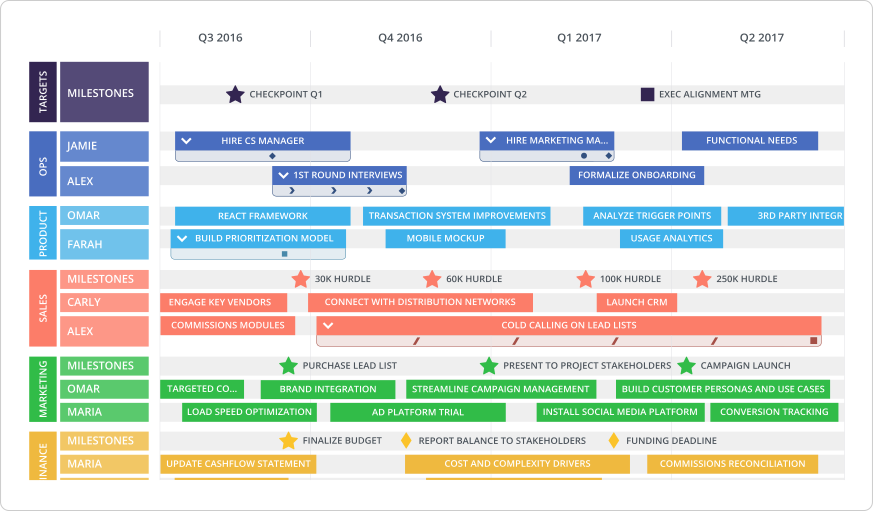
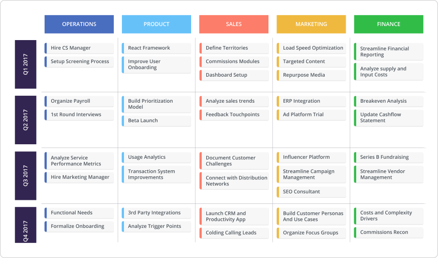

As an entrepreneur, you’ve got business goals to hit and a plan in mind to get there. While a business plan seems like the obvious choice for jotting down this plan, it’s not always the most relevant artifact for planning growth.
Business plans can get super granular and balloon to the size of a novel. And truth be told, it’s a ton for stakeholders to digest.
When planning organizational growth, you want a flexible document that captures and succinctly presents key goals, dates and plans of action relevant to all your stakeholders. Not an endless document you have to sift through with a fine tooth comb. Enter a business roadmap.
Find the right roadmapping tool for you and your business. Download our free guide here.
The business roadmap definition
What is a business roadmap? Much like a business plan, it’s a long view of where your organization is going and how you’re getting there. But what differentiates it from your typical business plan is that it’s a higher-level visualization of your business’ big picture.
A business roadmap illustrates your company’s major objectives and strategies for achieving growth. For businesses comprising of multiple departments, a business roadmap prevents individual teams from being siloed off by clearly outlining the business’ future and each department’s role in upcoming growth.
Now, business growth can be illustrated in various types of roadmaps like a strategic roadmap, a startup roadmap or even something as specific as a marketing or HR roadmap. But the most common use case for mapping business growth is a roadmap that visualizes key business growth projects and deadlines across all of a company’s departments. So let’s take a look at this business roadmap example.
How to visualize your business roadmap
Let’s assume we’re dealing with a business beyond the two-people-in-a-garage phase. (Not that this roadmap can’t work for small businesses, but it’ll be much simpler than what we’re presenting.) You’ve got different teams and departments with several balls in the air. Product is planning a rollout to mobile. Marketing needs to ensure the go-to marketing plan for this launch is ready. Plus, they’re planning their next event. Sales is following up on a crapload of leads brought in from the last event. And HR, well, they’re on a hiring roll for all departments.
With so many moving parts, there’s a lot for anyone in a business to wrap their head around. Your C-level execs need clarity on whether your departments are headed in the right direction. Your department heads need to know that their projects are contributing to the overall growth of the business—and not being stalled by other departments. And if you’re a business vying for investors or partners, these external stakeholders sure as heck want to know your future plans for expansion.

All set to build your own Timeline business roadmap? Check out our ready-to-use template.
A Timeline View of your business roadmap provides a straight-to-the-point overview of major projects and deadlines team-by-team. Plotting each department’s growth strategy across months, quarters or a year (the timeframe’s completely up to you!), businesses can accurately assess each team’s time/resource allocation and contribution to growth-related initiatives. As well, this view lets teams see how they’re working in conjunction with the rest of the org to grow the business, squashing (or identifying) any feelings of being siloed off.
A timeline also lets a business pull out important dates via Milestones. By laying out expected deadlines, the entire organization can be on the same page about when to expect certain initiatives or goals to be complete, making it easier for teams to plan their work accordingly.
For businesses that crave details, this view can be pivoted many different ways to tell a more detail-oriented story of your business’ plan. For instance, you can pivot the roadmap by owner (like in the roadmap above), which allows higher-ups to determine if too much strain is being put on certain resources. The end result: better decisions about work distribution.

Maybe the Swimlane business roadmap like ☝️ is more your speed. Get a template here.
For businesses that don’t really dig the idea of allocating specific timeframes to every single item, you can organize your business roadmap in a Swimlane View. Still showing each department’s individual projects and strategies, you can have swimlanes dedicated to each team and then organize items by any timeframe. Think of this view as a snapshot of each team’s primary objectives for certain periods of time. Someone should be able to look at this business roadmap and quickly understand what each team is trying to achieve in each timeframe.
But maybe you’re a more status-focused entrepreneur. In that case, you can pivot this view to highlight which projects per team are in progress vs. scheduled vs. proposed. This is another way to provide a transparent snapshot to anyone who wants an update on how the business is developing.
As your business evolves though, your business goals will change and your roadmap will have to reflect that. In the above examples, we’re still dealing with a lot of high-level business initiatives like operations determining onboarding practice, or sales cold calling their lead lists, or marketing rolling out conversion tracking. The more you grow, the more precise your goals get.
Maybe you want to map out specific revenue targets or fundraising goals. Or maybe you pivot to only showcase each department’s business development initiatives aimed at very-rapid revenue growth. Or if you’ve reached enterprise status, maybe you only map LARGE, ambitious business capabilities like releasing new product lines or owning certain percentage of market share. Your business roadmap has to mature in order to reflect the more developed and thorough goals that come with business growth.
So go ahead, try one of our business roadmap templates. No matter your business size, you’ll always need a plan to achieve growth. Don’t solely depend on a business plan to strategize growth; implement a business roadmap to align your entire organization on every team’s efforts to grow the business.
If you want to build more roadmaps, give Roadmunk a try with a free, 14-day trial. Sign up here.